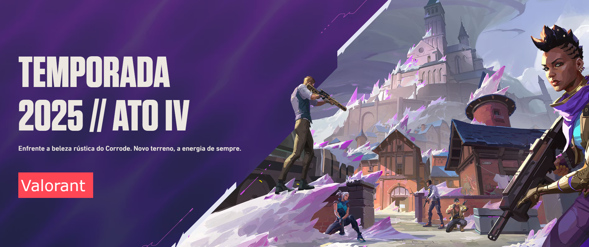

Valorant
Imagine um jogo onde cada clique, cada passo e cada segundo pode decidir entre a vitória e a derrota. Um lugar onde reflexos rápidos não bastam você precisa pensar, se comunicar e se adaptar a cada rodada. Esse é Valorant, o fenômeno da Riot Games que redefiniu o cenário dos jogos de tiro em primeira pessoa. Lançado oficialmente em 2020, o jogo rapidamente dominou o mundo dos eSports e conquistou uma legião de fãs. Mas o que faz Valorant ser tão especial? Por que milhões de jogadores escolhem esse jogo para passar horas todos os dias? A resposta está na combinação única entre precisão, estratégia e poderes especiais sim, você não ouviu errado: poderes. Diferente de outros FPS como CS:GO, aqui você não é apenas um atirador; você é um agente, com habilidades únicas que podem mudar completamente o rumo da partida. E é justamente essa mistura entre habilidade técnica e elementos táticos que fazem de Valorant uma verdadeira obra-prima dos jogos competitivos.
Cada partida em Valorant é composta por dois times de cinco jogadores, que se revezam entre atacar e defender. O objetivo? Plantar ou desarmar a Spike, uma espécie de bomba futurista, ou eliminar completamente o time adversário. Mas o que diferencia essa dinâmica de outros jogos de tiro está na presença dos agentes. São personagens com habilidades únicas que vão desde curas milagrosas, paredes de fogo, até drones de reconhecimento e flashes que cegam o inimigo. Isso transforma o jogo em uma batalha de cérebro e dedo, onde saber quando usar uma habilidade pode ser mais importante do que ter uma mira perfeita. E não se engane: por mais que você consiga dar um headshot certeiro, se não souber trabalhar em equipe e usar bem os recursos, dificilmente vai conseguir levar seu time à vitória.
Ultimas Noticias
O Champions 2026 será em Xangai
PUMP IT UP // Trailer de revelação da Skin SplashX
AQUI E AGORA // Trailer do VCT Americas etapa 2